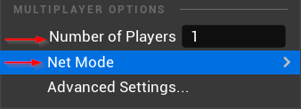
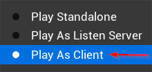
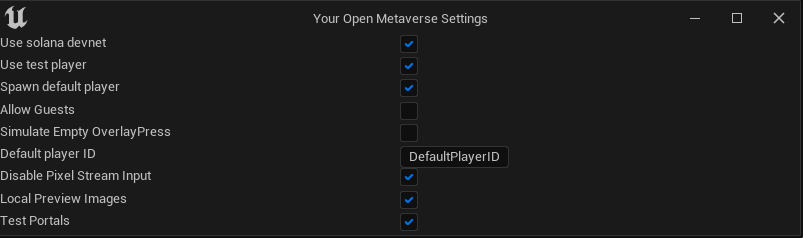
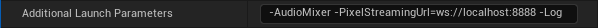
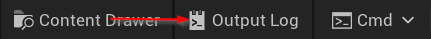

- Generated by
 1.9.5
1.9.5
|
YOM Replicator SDK 0.5.0.20
A metaverse SDK created by YOM
|
In this page we will show you how you can check wether your metaspace is setup correctly such that you can debug your metaspace in the case of an issue.
Firstly, we want you to run a metaspace in the following way: At the green play button click the three dots and then under Multiplayer Options set Number of Players to 1 and click Net Mode -> Play as Client. This will enforce your editor to start up a server and a client, which is also the setup when you deploy your metaspace on YOM.
 
Then go to Tools -> Your Open Metaverse -> Metaspace Settings and set it to the following:

These settings will ensure that your metaspace is setup for testing.
If you want to debug with a signalling server, you need to set some additional settings in the editor to ensure that unreal and the signalling server can connect.
First go to Edit -> Editor Preferences -> Additional Launch Parameters and set this to -AudioMixer -PixelStreamingUrl=ws://localhost:8888 -Log, which will enable audio, set the pixel streaming url and open the log.

Secondly you will need to play as a standalone game. This can be set At the green play button click the three dots and then press Standalone Game
Furthermore, we recommend going to Tools -> Your Open Metaverse -> Metaspace Settings and disable Spawn Default Player if you are using the signalling server of Your Open Metaverse, otherwise leave this turned on. If you are using the signalling server of Your Open Metaverse also enable Allow Guests.
You can now launch your signalling server and launch the game. The two applications will automatically connect with each other if the ports that they connect on are the same. You can spawn a player from the browser by going to http://localhost/?guestName=guest. If they do not connect first check if the signalling server actually shows when you go to localhost, otherwise check your Additional Launch Parameters, and lastly check the config.json file of the SignallingServer to see if the port is set correctly to 8888.
If any of the Actors or Components that Yom provided are not working as you expect it is always a good idea to look in the Output Log for warnings or other useful information. You can open this by clicking Output Log, which is next to Content Drawer in the bar at the bottom of the editor.
